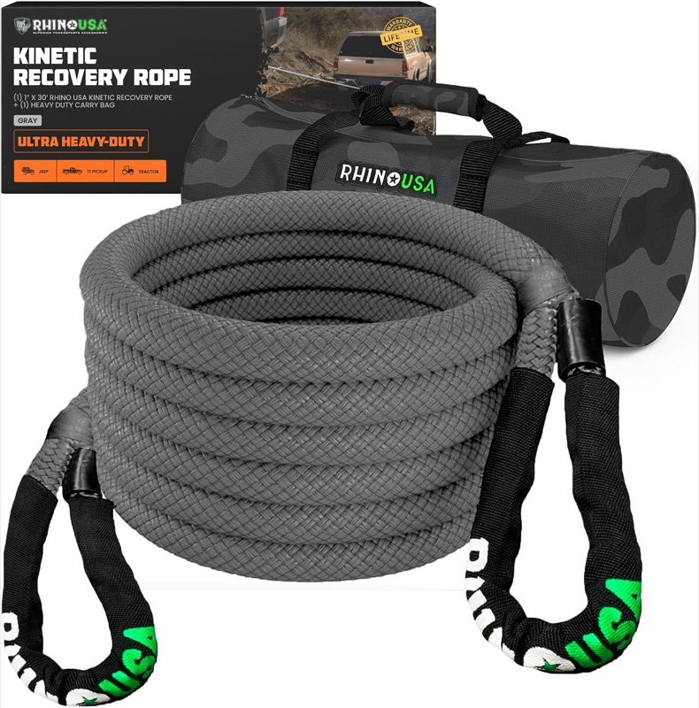
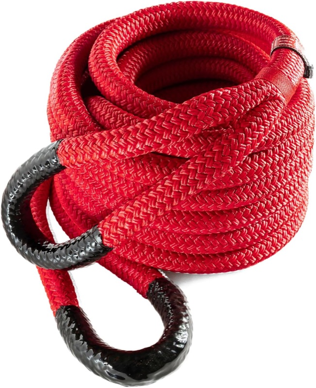

Table of Contents
Compare the Five Listings
One flat snatch strap and four kinetic ropes, all 30 feet long. Confirm the current listing, size and included items before purchase.
| Product | Type and size | Review |
|---|---|---|
| ARB ARB710LB 30-foot Recovery Snatch Strap | Flat snatch strap, 3-1/4" x 30' | See pick |
| Bubba Rope 30-foot Power Stretch Recovery Rope | Kinetic rope, 30-foot Power Stretch | See pick |
| Rhino USA Kinetic Recovery Rope 1in x 30ft | Kinetic rope, 1 in x 30 ft | See pick |
| Bubba Rope 3/4" x 30' Kinetic Recovery Rope | Kinetic rope, 3/4" x 30' | See pick |
| Yankum Kinetic Recovery Rope 7/8" x 30' | Kinetic rope, 7/8" x 30' | See pick |
A stuck vehicle is easier to free with a line that stretches. A kinetic rope or snatch strap stores energy as it stretches and gives it back as a smooth pull. The two look similar in a recovery bag, but they are built differently and they ask for slightly different habits.
This guide compares five 30-foot options: one flat snatch strap and four kinetic ropes. It reuses the notes already published in the recovery gear guide and adds no new claims about the products. Check each current listing before you buy.
The short answer
- Match the line to the vehicle: the smaller ropes suit mid-size trucks and SUVs, and the larger ones are aimed at full-size trucks. Confirm the size on the listing.
- Pick one type and learn it: a flat snatch strap and a kinetic rope are both used for recovery pulls, so choose the one you will rig the same way every time.
- Pair it with rated hardware: the line is only one part of the pull. Rated shackles or soft shackles and rated recovery points matter just as much.
Kinetic rope vs. snatch strap
Both are made to stretch. That stretch is what separates them from a tow strap, which is meant for pulling a vehicle along a road and is not a recovery tool.
Flat snatch strap
A snatch strap is flat webbing with a loop and, often, a protective sleeve at each end. The ARB strap in this guide is an example: it is listed as 3-1/4 inches wide and 30 feet long, with reinforced eye and seam protector sleeves. Flat webbing is easy to see on the ground and easy to fold into a bag.
Kinetic rope
A kinetic rope is typically a round, braided line. The Bubba Rope Renegade is listed with double-braid nylon construction and protected loop ends. Ropes are sold in several diameters, so the size you choose should match the vehicle you are recovering.
What they share
- Both store energy as they stretch, so a pull should be smooth and controlled rather than a hard jerk.
- Both need rated shackles or soft shackles and rated recovery points on both vehicles.
- Both wear out. Inspect them before each trip and after each pull.
The five picks
The flat strap comes first, followed by four kinetic ropes from the smallest listed diameter to the largest. These are options to compare, not a ranking.
1. ARB ARB710LB 30-foot Recovery Snatch Strap — the flat-strap option

ARB ARB710LB 30-foot Recovery Snatch Strap
A 3-1/4-inch by 30-foot ARB snatch strap. It is the flat-webbing choice in this comparison.
What the site notes support
- Listed as a 3-1/4" x 30' recovery snatch strap.
- Reinforced eye and seam protector sleeves support shackle fitment.
- High-visibility orange webbing makes it easy to see during recovery planning.
2. Bubba Rope 30-foot Power Stretch — a second Bubba Rope option
Bubba Rope 30-foot Power Stretch Recovery Rope
A 30-foot Bubba Rope recovery rope sold under the Power Stretch name, model 176680RDG.
What the site notes support
- Listed as a 30-foot Power Stretch recovery rope.
- Sold by Bubba Rope, a brand that also appears in the recovery gear guide.
- Confirm the exact size and included items on the current listing before you buy.
3. Rhino USA Kinetic Recovery Rope 1in x 30ft — the thickest rope here

Rhino USA Kinetic Recovery Rope 1in x 30ft
A 1-inch by 30-foot kinetic recovery rope that the listing also calls a snatch strap for trucks, Jeeps, UTVs and ATVs.
What the site notes support
- Listed as a 1in x 30ft kinetic recovery rope.
- The listing describes shock-absorbing stretch for smoother pulls.
- Already linked from the 4Runner build guide as a kinetic rope option.
4. Bubba Rope Renegade 3/4" x 30' — the compact rope for mid-size rigs

Bubba Rope 3/4" x 30' Kinetic Recovery Rope
A compact, high-stretch 3/4-inch by 30-foot kinetic rope for mid-size trucks and SUVs.
What the site notes support
- UV-resistant double-braid nylon construction.
- Protective sleeve at the loop ends helps prevent abrasion wear.
- Made in the USA, per the recovery gear guide.
5. Yankum Kinetic Recovery Rope 7/8" x 30' — the step up for full-size trucks

Yankum Kinetic Recovery Rope 7/8" x 30'
A 7/8-inch by 30-foot Yankum kinetic recovery rope, the size the recovery gear guide suggests for full-size trucks.
What the site notes support
- Listed as a 7/8" x 30' kinetic recovery rope.
- The listing title also says Made in USA.
- The recovery gear guide positions this size for full-size trucks.
Rigging a kinetic pull safely
Follow the instructions that come with your line and your vehicle. These are general practices that apply to any stretchy recovery line.
- Use rated recovery points. Attach to frame-mounted recovery points, never to a tow ball, bumper trim, axle tube or suspension part.
- Use rated shackles or soft shackles. Skip metal hooks and un-rated hardware. The shackles section of the recovery gear guide covers the options.
- Inspect before you pull. Look for cuts, fraying, melted fibers and damaged loops or sleeves. Replace a line that shows damage.
- Do not tie knots in the line. Use the loops and rated hardware instead.
- Keep everyone clear. Bystanders stay well away from the line and the vehicles. Do not stand in line with the pull.
- Pull smoothly. Take up slack gently, then ask the driver to accelerate smoothly so the stretch does the work.
If you carry a winch, the winch guide covers the other side of recovery. For a lighter self-recovery step before you reach for a line, see the Hi-Lift jack alternatives.
Which pick fits which rig
- Mid-size trucks and SUVs: the Bubba Rope Renegade 3/4" x 30' is the compact option, and the recovery gear guide notes it for mid-size rigs.
- Full-size trucks: the Yankum 7/8" x 30' is the size the recovery gear guide points to for full-size trucks. The Rhino USA 1in x 30ft is the thickest rope listed here.
- You prefer flat webbing: the ARB strap is the flat option and has protective sleeves at the eyes.
- You want a second Bubba Rope to compare: the Power Stretch is another 30-foot option from the same brand.
Building the whole kit? The complete packing list shows where recovery gear fits, and the recovery gear guide covers boards, shackles and snatch blocks.
Before you buy: size, construction and fit
- Confirm the exact model on the current listing, including the length and diameter or width.
- Match the line to your vehicle and check the manufacturer's stated limits for it.
- Check the included items. Some listings include extras such as a bag or hardware; others sell the line alone.
- Plan your hardware. Make sure you also carry rated shackles or soft shackles.
Kinetic rope FAQ
What is the difference between a kinetic rope and a snatch strap?
Both are stretchy recovery lines that store energy and release it to pull a stuck vehicle. A snatch strap is flat webbing; a kinetic rope is usually a round, braided line. Check the listing for the exact construction.
Can I use a kinetic rope or snatch strap for towing?
No. They are made to stretch for recovery pulls, not to tow a vehicle down the road. A non-stretch tow strap is the tool for towing.
Where should I attach a recovery line?
Only to rated recovery points, using rated shackles or soft shackles. Never attach to a tow ball, and never use a loose hook that can fly free.
How do I know a rope or strap is still safe to use?
Inspect it before every trip and after every pull. Retire it if you see cuts, fraying, melted fibers or damaged loops or sleeves.
How should I check a product before buying?
Open the current Amazon listing, confirm the exact model and size, read the included-items list, and compare the stated specifications with the vehicle you plan to recover.